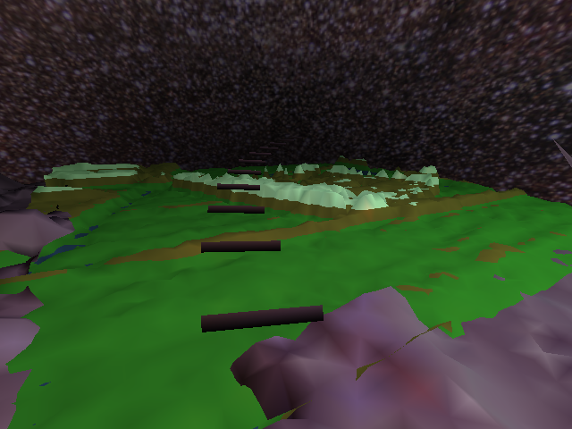
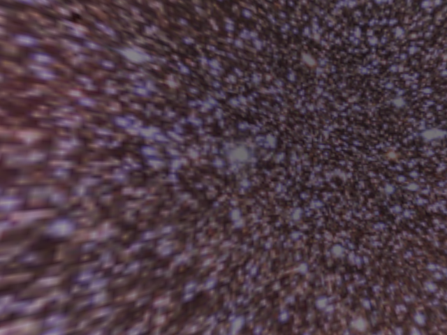
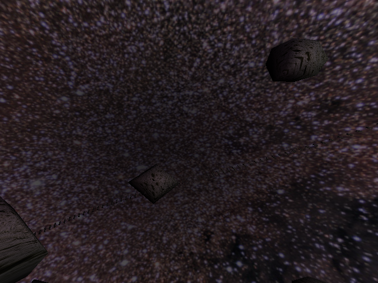
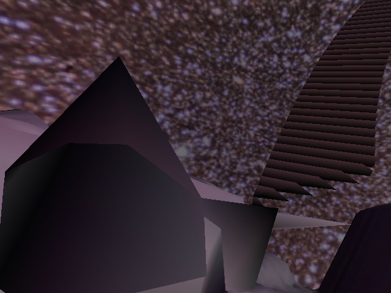
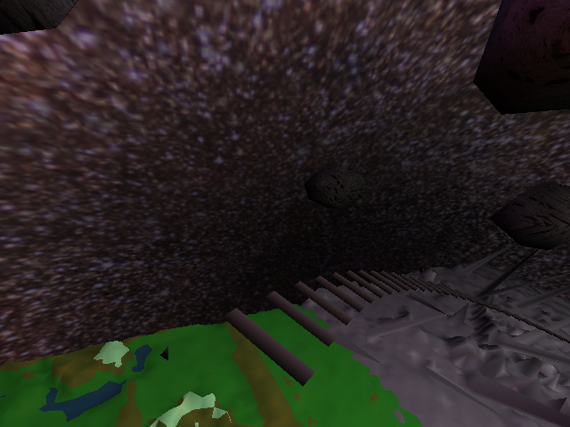
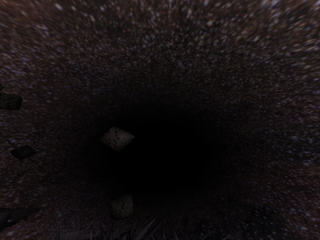
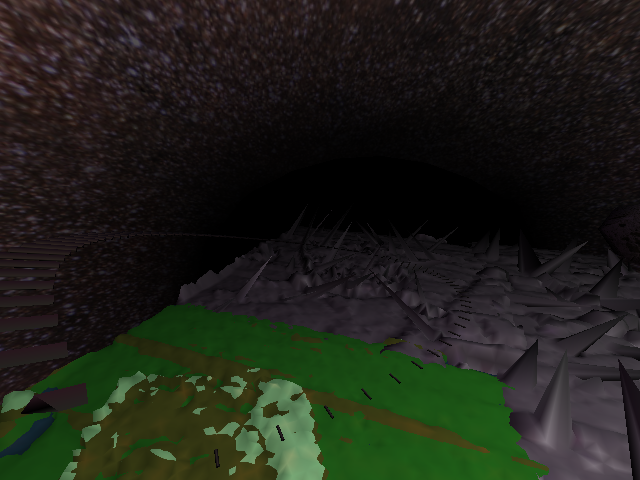
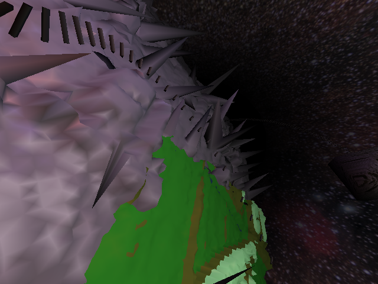

Graphics Project : Meteoric pleasure
Blurb
Earths psychologists have found the perfect solution to overpopulation. With an industrial strengh electric sander, and a hearty coat of paint, previously hostile environments can be brought to rein. Human beings can't tell the difference! (After all mice can't.)Our ride explores an asteroid in the process of beautification (terrafondling). Being pyschologists however, they missed the nearby meteroid belt, and constructed their rollercoaster right in the centre of it, much to our entertainment delight.
Screenshots
The first coat of paint

My star based texture. Based on real stars, although the psychologists are sitting in a bright section of the galaxy.
No city lights perchance

Avast, meteoroids displaying aggressive behavior

Rollercoaster stretching into the infinite above

Work in progress : The surface of our asteroid (The transformation to human friendly environment is still a couple coats short)

Black fog simplifying matters, and giving the galaxy some depth

The surface in context (Blender utilised to supply an interesting surface)

The hearty sheen of the surface makes itself unavoidably apparant.

Note
Prof Bangay : You may have to adjust Makefile to point to your qt librariesDownloads
Download my codeSatisfaction of requirements
lighting : I added two further bright white light sources to the environment. I made use of the opengl lighting material model to lend my untouched asteroid surface a vaguely plastic artificial sheen. I also used it for all colour manipulations. My stars actually shine, emitting light of their own accord. (Although this light is not received by anything else in the model.)texture mapping : My starry sky is created by plastering the inside of a sphere with a starry texture. I also texture map my earth like terrain and my meteoroids.
animated objects using hierarchical transformations : My meteoroids are animated using hierarchical transformations
Further Aspects
I have created lists for all non-mesh objects rendered in my scene. (This is automatically handled for mesh objects by the mesh class supplied with the base code)I dabbled with my spline for ages, in order to achieve pseudo gravity (slow up, accelerating down), a pathway through the canyon and an interesting ride fraught with flips and twists